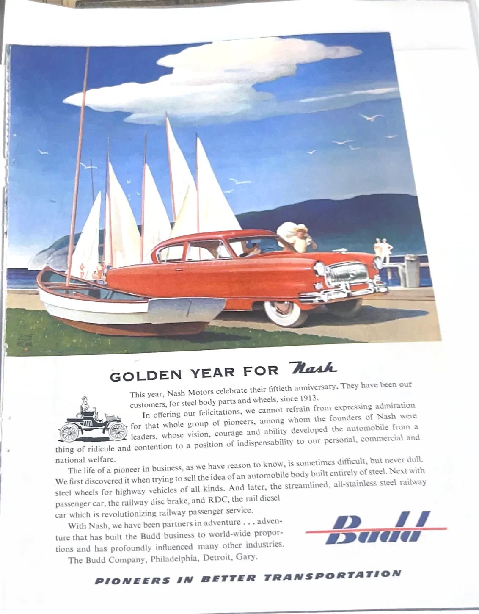
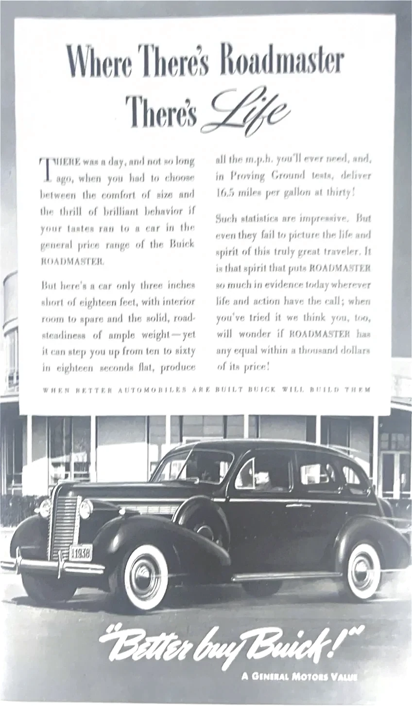

COLLECTION 003 · THE MOTORING ARCHIVE
Beautiful machines, beautifully remembered
From streamlined 1930s sedans to chrome-rich postwar icons, explore the magazine artwork and automobile stories preserved in this growing archive.
80 distinct advertising designs · Researched CAD price suggestions · Add to bag for availability enquiry



THE EDITOR'S SELECTION
Beautifully matched sets
Browse eighteen coordinated groupings by marque, era or design theme. Each has a researched, indicative CAD price and can be added to your bag for a no-obligation enquiry.
Each set contains distinct photographed designs, but different sets can share the same underlying page and may not be combined in one bag. Thirteen redundant scan listings have been consolidated. Physical stock is not yet confirmed. How suggested prices were researched.
THE DETAILS MATTER
Explore the archive
Browse 80 individually described advertising designs with researched CAD price guidance, filter by make, era and price, inspect the actual catalogue photographs, and add selections to your bag for an availability enquiry.
Original page photographs · No recreated artwork
These are photographs of catalogued advertising designs; the number of images does not establish the number of physical originals. Requests are subject to stock and condition verification.
About indicative prices
Displayed prices are research-informed, indicative CAD asking prices—not yet binding offers—based on comparable online listings for vintage automobile magazine advertisements. Ordinary single-page advertisements tend to be more affordable than framed, scarce or especially sought-after designs. The proposals are not appraisals or verified sale prices and may need adjustment after the physical originals, reverse sides, sizes and paper condition are inspected.
Selected comparison sources include eBay Canada vintage automobile advertisements, Etsy vintage magazine ads, 1930s automotive advertising examples, and Flashbacks USA original car advertising. Listings vary widely in condition, size, authenticity and framing; a low-price sold auction lot also illustrates that asking prices are not guaranteed outcomes.